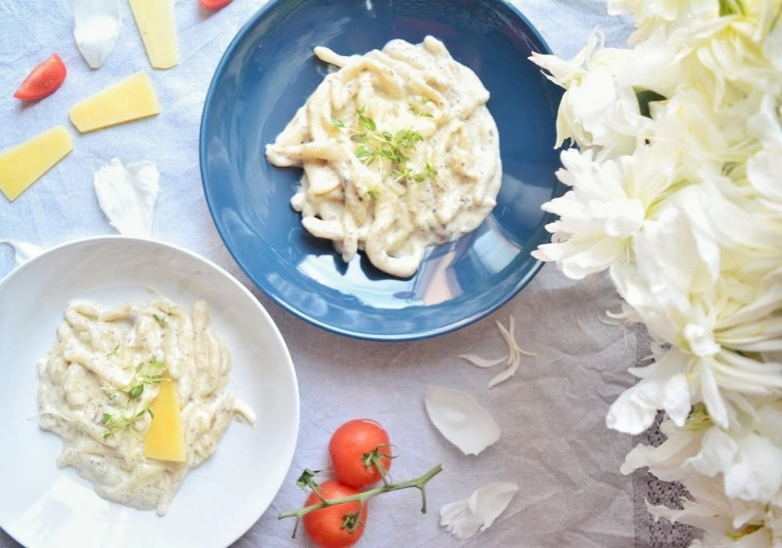

Istrian pasta with truffles

Description
Favorite dish of Istrian people. You can do it too, now.
Ingredients for 2 persons
- 250g pasta (pljukanci, fuži)
- 50 g butter
- 200/250 ml cooking cream
- 80g truffles
You can add per your wishes
- 30g of parmesan
- Olive oil
Preparation
- Put pasta in pot. Pasta needs to be pljukanci or fuzi.
- In time pasta cooks itself, you need to prepare sauce
- Put butter in pan
- When butter gets wattery, put truffle sauce in it.
- Add cooking cream and mix it.
- Add spices, salt and pepper. You can add your favorite spice, too.
- Cook it on low fire
- When pasta is done, strain pasta to get water out. Put pasta in pan with sauce.
Cook it for one more minute so it connects every ingredient.
- If you want to add parmesan do it now and you can now put it in front of people and be proud of yourself.